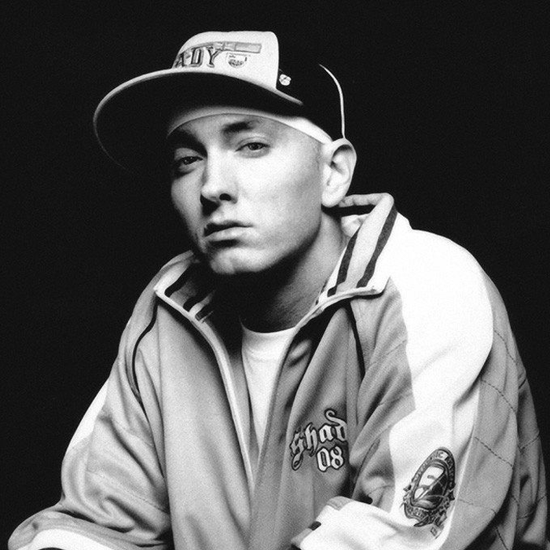
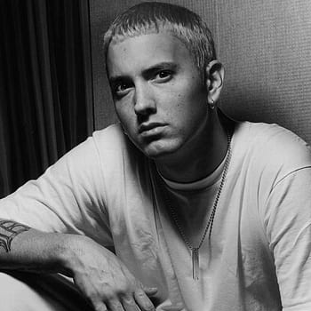
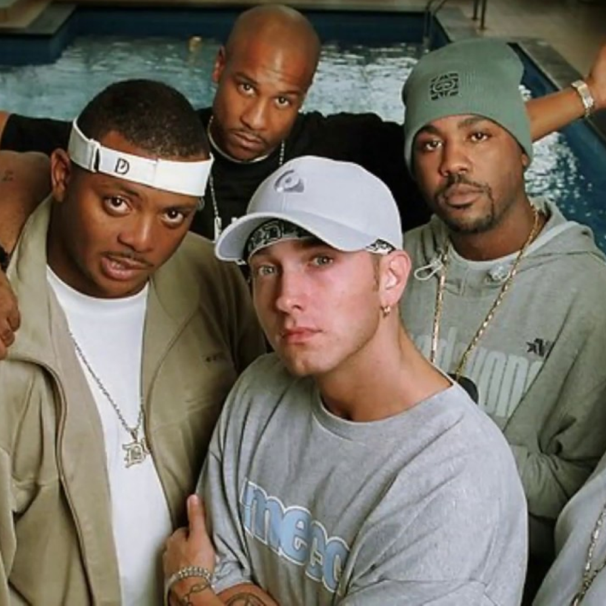
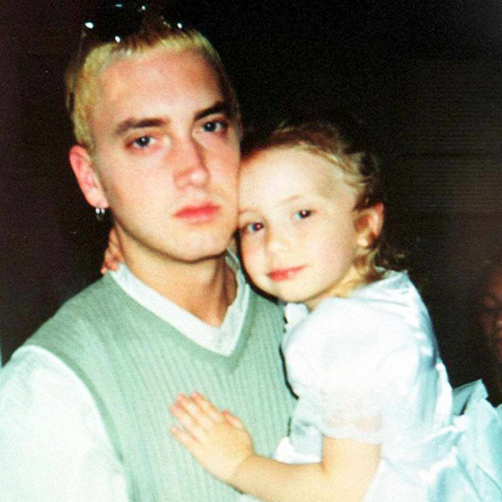
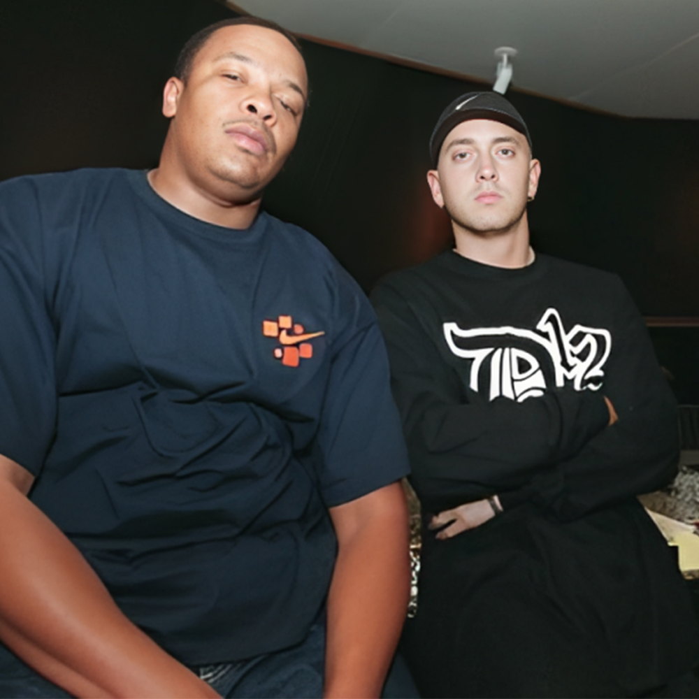

Mathers s-a născut pe 17 octombrie 1972, în St. Joseph, Missouri, singurul copil al lui Marshall Bruce Mathers Jr. și Deborah Rae „Debbie” . Tatăl său și-a abandonat familia când el avea un an și jumătate, iar Marshall a fost crescut doar de mama sa, Debbie, în sărăcie. Eminem a avut o copilărie foarte tulbure și instabilă. Deseori i-a fost jefuit casa, a încercat să se sinucidă de mai multe ori și a avut o relație complicată cu mama sa.
Și-a petrecut cea mai mare parte a copilăriei atât în orașul în care s-a născut, cât și în Detroit. Atras fiind de muzica rap încă din copilărie, Eminem a început să cânte de la vârsta de 14 ani, repetând în subsolul casei unui coleg de școală. Cei doi și-au luat numele de scenă Manix și M&M (Marshall Mathers), schimbat în scurt timp în Eminem. Pentru a putea trece peste piedicile și concepțiile rasiste cum că albii nu cântă rap, s-a hotărât că modul cel mai ușor de a caștiga audiența în lumea underground este de a face battle cu alți rapperi, în cluburi. Deși nu a fost acceptat imediat, în timp a devenit atât de popular încât oamenii îl provocau pentru a-și face un renume ei înșiși.
Controversele rezultate din versurile sale au reprezentat cea mai bună reclamă pe care orice muzician și-ar fi dorit-o. Nu a mai existat un rapper de rasă caucaziană care să aibă succesul său. Toate acestea i-au oferit o platformă inaccesibilă altora, poate la fel de talentați rapperi afro-americani. Deși un bun producător, talentele sale au fost mereu umbrite de prezența sa media, prezență ce combina elemente de geniu neînțeles. Mesajele sale se refereau la tineretul dezafectat care are puține modele în lumea rap la care să se raporteze. Sinuciderea unchiului său a determinat ieșirea sa pe o scurtă perioadă din lumea muzicii rap, dar s-a întors și a început să primească oferte de a forma grupuri. Pentru prima dată s-a alăturat formației New Jacks, apoi formației Soul Intent de unde a scos prima melodie, în 1995. Un rapper pe nume Proof, alături de care a cântat Eminem, l-a plăcut atât de mult încât l-a invitat să formeze un grup. Acestui grup i s-au alăturat câțiva prieteni și au alcătuit D12, format din șase membri, fiecare având proiectul său solo.
Nașterea primului său copil a pus, din nou, cariera sa pe planul doi fiind nevoit să lucreze pentru a avea grijă de familia lui. Acest lucru a determinat începutul compozițiilor de texte cu conținut explicit, arătându-și astfel nefericirea și tristețea. Un album de debut în 1996 - “Infinite” a deviat ruta sa artistică însă a primit și ceva laude comparându-l cu Nas și AZ. Apoi a creat “Slim Shady”, un alter ego, deoarece i s-a făcut frică să cânte despre ceea ce simte. Scriind despre sentimentele sale, a avut mult material în același an, atunci când mama sa a fost acuzată de abuz mental și fizic asupra fratelui său mai mic. Anul următor prietena sa l-a părăsit și i-a interzis să mai viziteze copilul, așa că a fost obligat să se mute înapoi cu mama sa, experiență care i-a mărit ura pentru ea. Ceea ce scria devenea din ce în ce mai rău, dar asta după începutul abuzului de alcool și de droguri (somnifere - din cauza stresului nu mai putea să doarmă și a fost nevoie să apeleze la medicamente, dar a devenit dependent).
O tentativă de sinucidere ratată a fost ultima picătură, apoi a realizat că singurul mod de a evada din viața sa atât de tristă era să se ocupe serios de muzică. A scos LP-ul “Slim Shady” plin de spirit, vesel, amuzant și provocator. Făcând o impresie foarte bună, nu numai prin modalitatea sa de a cânta rap nazal ci și prin culoarea pielii, a fost numit “marea speranță albă”. După cum spune legenda, Dr. Dre i-a descoperit caseta pe treptele casei de producție Interscope, însă în realitate, Eminem a ocupat locul doi la un concurs de freestyle, în 1997. Concursul se chema Rap Olympics MC Battle și a avut loc în Los Angeles. După concurs i s-a cerut un demo. După o lună Dr. Dre a ascultat demo-ul lui Eminem. Dre a fost mai uimit de culoarea pielii decât de talentele sale. După nici o oră din prima întâlnire înregistrau deja “My Name Is”. Dre a fost de acord să-i producă albumul și au scos melodia “Just Don’t Give a Fuck” pentru a-și face reclamă albumului. S-a împăcat cu prietena sa, cu care s-a căsătorit în 1998, iar Interscope îl promova ca pe discipol al lui Dre. O apariție pe Kid Back’s Devil Without a Cause l-a ajutat să-și îmbunătățească imaginea și să devină mult mai cunoscut.
